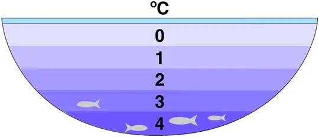
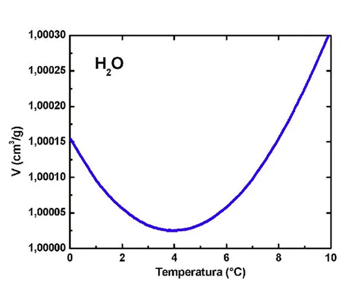

Cud wody
Zanim zobaczymy trochę zimy przygotujmy się, bo zobaczymy cud. Jak wiemy ze szkoły wszystkie ciała wraz ze spadkiem temperatury się kurczą. Woda ma cały szereg wyjątkowych właściwości, które są sprzeczne z intuicjami naukowców, ale skupmy się na tej jednej, bo to ona powoduje, że na Ziemi jest życie, jakie znamy.

Gdyby woda zachowywała się jak wszystkie inne ciecze, najzimniejsza opadałaby na dno zbiornika i tam potem zamarzała. Każdej zimy zbiorniki wodne byłyby skute lodem w całej objętości, do dna. Katastrofa! Tymczasem, zupełnie nie wiadomo dlaczego, woda zajmuje najmniejszą objętość, gdy ma 4 stopnie Celsjusza. Gdy stygnie, np. z temperatury 10 stopni C, kurczy się, ale tylko do chwili gdy osiąga 4 stopnie C, gdy stygnie bardziej znów zaczyna się rozszerzać, zwiększać objętość przez co wypływa na powierzchnię.

Nie znam wytłumaczenia tego fenomenu, bo chyba zagadka nie jest rozwiązana, jest to wbrew wszystkiemu, co wiemy o budowie materii. Dzięki temu woda schłodzona do zera stopni C unosi się na powierzchni i zamarza, a lód ma jeszcze większą objętość i pływa. Ryby i inne organizmy mogą przeczekać zimę na dnie a rzeki płyną nie tworząc potężnych lodowych tam i katastrof z tym związanych.
Paweł Klimczewski